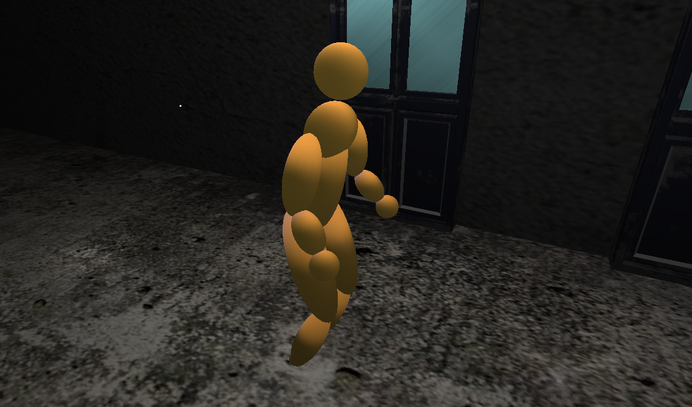

For my project, I decided to create an endless hallway which a player can walk down using the r key. I decided on this project because I realized the OpenGL system provided a lot of control over the position and orientation of an object within the world. This level of control and the ability to dynamically alter the placements of items based on other elements of the scene, informed the direction I would take my project. An infinite hallway illusion is a fairly straightforward effect to do in most 3D modeling softwares. However it is difficult to make all the objects interface with one another in a way that ensures minimal glitches and bugs. I decided that I would try and tackle this challenge and attempt to make an interactable infinite hallway for my final project.
One of the primary focuses of my project was on designing a realistic and interesting movement model for the controlable character. I began with a simple sin function and used it to block out the motion of the left leg. It took almost an hour of trial and error to get a result that I was happy with, but after using my own motion as a reference I managed to create an animation I was happy with. After getting one leg working, I just needed to offset the motion to get the other one to look alright. Working up to the arms, I was able to get a slight swing motion down in a pretty short amount of time, working off of the experience I had with designing the leg. The aspect of the motion that really tied everything togather was the slight bobbing of the torso that I added near the end of the process. Since the entire model is designed off of a sin wave, I was able to make the motion feel very cohesive if a little bit robotic. I also used that same sin function to add a modular amount to the forward position, ensuring the character would move forward at a rate that was in time with their movements.
One of the primary focuses of my project was on designing a realistic and interesting movement model for the controlable character. I began with a simple sin function and used it to block out the motion of the left leg. It took almost an hour of trial and error to get a result that I was happy with, but after using my own motion as a reference I managed to create an animation I was happy with. After getting one leg working, I just needed to offset the motion to get the other one to look alright. Working up to the arms, I was able to get a slight swing motion down in a pretty short amount of time, working off of the experience I had with designing the leg. The aspect of the motion that really tied everything togather was the slight bobbing of the torso that I added near the end of the process. Since the entire model is designed off of a sin wave, I was able to make the motion feel very cohesive if a little bit robotic. I also used that same sin function to add a modular amount to the forward position, ensuring the character would move forward at a rate that was in time with their movements.
links to useful resources, such as Useful page